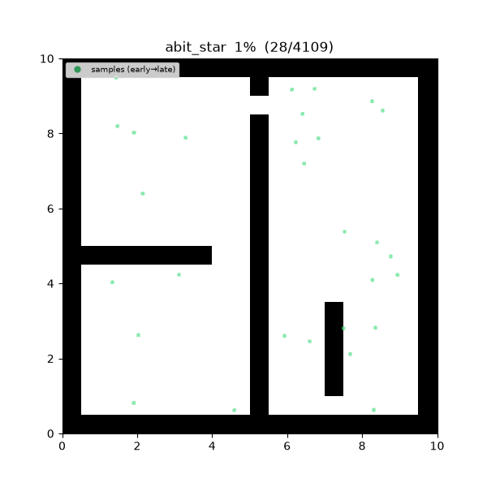
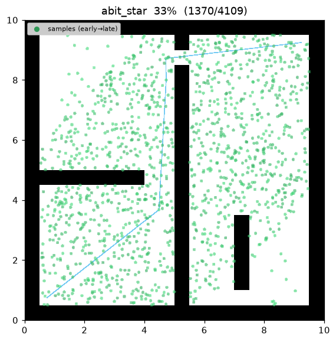
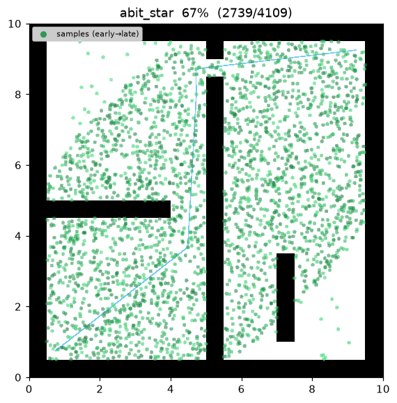
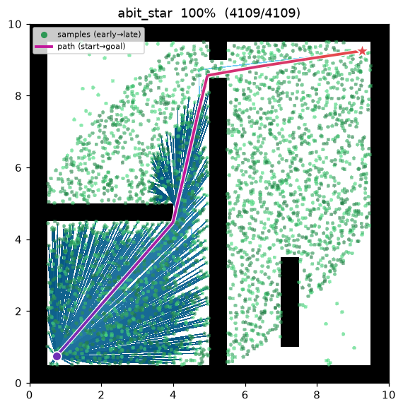
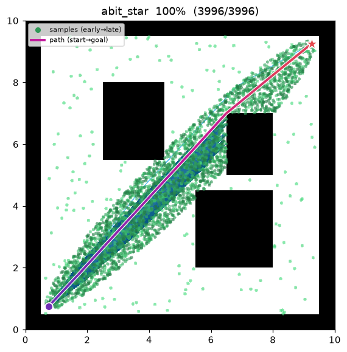

ABIT* (Advanced Batch Informed Trees)¶
| 항목 | 내용 |
|---|---|
| 분류 | sampling-based, batch, anytime, almost-surely asymptotically optimal |
| 요구 capability | SamplingSpace |
| 완전성 | probabilistically complete |
| 최적성 | almost-surely asymptotically optimal — 1 로 수렴하는 inflation 스케줄이 최적을 회복 |
| 복잡도 | 배치당 edge queue best-first 처리 + lazy 충돌 검사 (inflation + truncation 결합) |
| 원 논문 | Strub & Gammell (2020) 1 |
배경¶
Strub & Gammell1 은 BIT*2 의 뼈대 — 배치 RGG 표본화, 정점/간선 큐, lazy 충돌 검사, informed ellipse 표본화, prune, subtree 비용 전파 — 를 그대로 유지하면서, 휴리스틱 탐색 문헌의 두 아이디어를 더해 첫 해를 더 빨리 얻고 배치당 계산량을 줄인 ABIT* 를 제안했다:
- Inflation factor \(\varepsilon_{\text{infl}}\ge1\) 는 모든 큐 키의 cost-to-go 항을 부풀려 각 배치를 RGG 위의 weighted-A*/ARA* 통과로 만든다(Likhachev, Gordon & Thrun 20034). 초반 배치가 간선을 goal 쪽으로 탐욕적으로 정렬하므로, (다소 suboptimal 할 수 있는) 첫 해가 훨씬 적은 간선 처리 후에 나온다.
- Truncation factor \(\varepsilon_{\text{trunc}}\ge1\) 는 남은 어떤 간선도 현재 해를 \(\varepsilon_{\text{trunc}}\) 배 이상 개선할 수 없게 되는 즉시 배치를 끝내, 마지막 비용 조각만 깎을 수 있는 간선의 (비싼) lazy 충돌 검사를 건너뛴다.
두 계수 모두 배치마다 단조 감소하도록 스케줄된다 — \(\varepsilon_{\text{infl}}\) 는
inflation_factor 에서 inflation_final 로, \(\varepsilon_{\text{trunc}}\) 는 truncation_factor
에서 \(1\) 로 — 따라서 마지막 배치는 admissible·untruncated 탐색이 되어 BIT* 의 almost-sure
asymptotic optimality 를 회복한다.
동작 원리¶
maze01 — 초반의 크게 부풀린 배치가 goal 쪽으로 첫 해를 서둘러 찾고, 스케줄이 완화되며 이후
배치가 admissible 탐색을 회복해 경로를 최적으로 조인다.

탐색 중간 과정 (좌 → 우: 부풀린 첫 배치 / 완화 배치 / 최종 경로):
 |
 |
 |
open01 최종 결과 — 거의 직선에 가깝다:

ABIT_STAR(start, goal):
tree ← {start}; samples ← {goal}; c_best ← ∞
for batch in 1..max_batches:
ε_infl ← decay(inflation_factor → inflation_final, batch) # ARA* 식 스케줄
ε_trunc ← decay(truncation_factor → 1, batch)
samples ← prune(samples, c_best) # admissible 경계 (부풀리지 않음)
samples ← samples ∪ draw(batch_size, c_best) # 해 존재 시 informed 배치
r ← gamma · sqrt(log n / n); N ← radius_neighbors(V, r)
Q_V ← tree 정점 (키 g_T(v)+ε_infl·ĥ(v)); Q_E ← ∅
loop:
while best_v(Q_V) ≤ best_e(Q_E): # 정점 확장 → 후보 간선 생성
v ← pop(Q_V); expand v into Q_E # 간선 키 g_T(v)+ĉ(v,x)+ε_infl·ĥ(x)
(v, x) ← pop_min(Q_E) # 부풀린 키 기준 최선 간선
if g_T(v)+ĉ(v,x)+ĥ(x) ≥ c_best/ε_trunc: break # truncation → 배치 종료
if g_T(v)+‖v−x‖ ≥ g_T(x): continue # 트리 비용 개선 없음
if not is_motion_valid(v, x): continue # lazy 충돌 검사 (여기서만)
connect_or_rewire(x, parent=v) # 간선 채택
if goal in tree and g_T(goal) < c_best:
c_best ← g_T(goal) # incumbent 개선
return path(goal)
\(g_T(v)\) 는 트리 안 cost-to-come, \(\hat h(x)=\lVert x-\text{goal}\rVert\) 는 admissible cost-to-go 휴리스틱, \(\hat g(x)=\lVert \text{start}-x\rVert\) 다. 큐 키는 \(\hat h\) 항만 부풀리며, prune 과 간선 채택 검사는 부풀리지 않은 채로 둔다 — 따라서 채택된 간선은 언제나 실제로 \(g_T(x)\) 와 incumbent 를 낮춘다. inflation·truncation 은 어떤 일을 먼저 하고/건너뛸지만 바꾸며 채택된 간선의 정당성은 바꾸지 않는다.
측정치 (Python, seed = 1, trace on):
| map | path cost | 표본 수 | expanded (채택 간선) |
|---|---|---|---|
| maze01 | 13.493 | 3,002 | 1,109 |
| open01 | 12.047 | — | — |
\(\varepsilon_{\text{infl}}=\varepsilon_{\text{trunc}}=1\) 이면 탐색이 정확히 BIT* 로 환원된다 (maze01 에서 동일한 13.474 비용, 채택 간선 1,760). 기본 부풀림 스케줄은 훨씬 적은 간선 처리로 첫 해에 도달하고 더 적은 채택 간선으로 거의 동일한 비용에서 끝난다. C++ 구현도 동일 시나리오를 미러링하며, 언어 간 난수 스트림 차이 범위 안에서 같은 결과를 낸다.
재현:
python python/demos/demo_abit_star.py \
--map maps/grid/maze01.yaml --scenario maps/scenarios/maze01_s1.yaml \
--params configs/global_planning/abit_star.yaml --trace out/abit_star.jsonl
python tools/viz/replay.py out/abit_star.jsonl --gif out/abit_star.gif
성질¶
- 완전성: probabilistically complete1.
- 최적성: almost-surely asymptotically optimal. 각 배치는 bounded-suboptimal(weighted) 탐색이지만, inflation·truncation 스케줄이 \(1\) 로 완화되어 마지막 배치가 admissible·untruncated BIT* 탐색이 된다. 배치가 쌓이며 ABIT* 는 최적으로 수렴한다.
- anytime: 크게 부풀린 초반 배치가 첫 해를 빠르게(bounded-suboptimal) 내고, 이후 덜 부풀린
배치가 그 해를 조인다.
max_batches소진 시 현재 최선 해를 반환한다. - 배치당 계산량 절감: truncation 은 현재 해를 \(\varepsilon_{\text{trunc}}\) 배 이상 개선할 수 없는 간선을 검사하기 전에 배치를 끝내, BIT* 대비 lazy 충돌 검사를 아낀다.
Inflation 과 truncation¶
부풀린 edge queue 키. BIT* 는 간선 \((v,x)\) 를 \(g_T(v)+\hat c(v,x)+\hat h(x)\) 로 정렬한다. ABIT* 는 휴리스틱 항을 부풀린다,
이는 곧 implicit RGG 에 적용한 weighted-A* 키(Pohl 1970; ARA*, Likhachev et al. 20034)다. \(\varepsilon_{\text{infl}}>1\) 이면 goal 에 더 빨리 닿는 간선을 선호하므로 첫 해가 더 적은 확장으로 나오며, 반환된 첫 해는 최적의 \(\varepsilon_{\text{infl}}\) 배 이내로 유계다.
Truncation. 현재 해 \(c_{\text{best}}\) 가 존재하면, ABIT* 는 남은 간선의 admissible 추정이
가 되는 순간 배치를 끝낸다 — 즉 남은 어떤 간선도 incumbent 를 \(\varepsilon_{\text{trunc}}\) 배 이상 못 줄인다. \(\varepsilon_{\text{trunc}}\ge1\) 이라 이 임계는 \(c_{\text{best}}\) 보다 아래에 있어, BIT* 의 \(\ge c_{\text{best}}\) 규칙보다 배치를 일찍 끝내고 해당 간선의 충돌 검사를 건너뛴다. \(\varepsilon_{\text{trunc}}=1\) 이면 정확히 BIT* 규칙이다.
스케줄. 두 계수 모두 배치 index 에 따라 선형으로 감소한다 — \(\varepsilon_{\text{infl}}\) 는
inflation_factor 에서 inflation_final 로, \(\varepsilon_{\text{trunc}}\) 는 truncation_factor
에서 \(1\) 로 — 따라서 초반 배치는 유계·축소하는 suboptimality 를 속도와 맞바꾸고, 마지막 배치는
그 간극을 닫는 완전한 admissible BIT* 배치가 된다.
Informed ellipse (Gammell et al. 2014). BIT* 와 마찬가지로, \(c_{\text{best}}\) 가 생기면 이후 배치는 start·goal 을 초점으로 횡단 지름 \(c_{\text{best}}\) 인 타원 안에서만 표본을 뽑아3 현재 해를 개선할 수 있는 영역에 표본을 집중시킨다.
파라미터¶
| 이름 | 타입 | 기본값 | 범위 | 설명 |
|---|---|---|---|---|
batch_size |
int | 200 | [1, 100000] | 배치당 새로 뿌리는 (informed) 샘플 수 |
max_batches |
int | 15 | [1, 10000] | 최대 배치 수 (anytime — 소진 시 현재 best 반환) |
gamma |
float | 30.0 | [0.01, 1000.0] | RGG 연결 반경 계수 γ. r_n = γ·(log n / n)^(1/2) |
inflation_factor |
float | 10.0 | [1.0, 1e6] | 초기 heuristic 부풀림 ε_infl (≥1); 클수록 exploitation↑, 첫 해 빠름 |
inflation_final |
float | 1.0 | [1.0, 1e6] | 마지막 배치의 ε_infl (inflation_factor 에서 감소; 1.0 이면 최적성 완전 회복) |
truncation_factor |
float | 2.0 | [1.0, 1e6] | truncation 계수 ε_trunc (≥1); 배치를 조기 종료, 1.0 으로 감소 |
seed |
int | 1 | [0, 2^31−1] | 난수 시드 (재현성) |
방출 trace 이벤트¶
planning_started → sample_drawn* → edge_added* → candidate_evaluated* → path_found → planning_finished
sample_drawn 은 배치별 표본, edge_added 는 채택된 간선, candidate_evaluated 는 incumbent
비용 \(c_{\text{best}}\) 가 개선될 때마다(현재 최선 해 갱신) 방출된다 — BIT* 와 동일한 feasible
시점 방출 정책이다.
References¶
-
Strub, M. P., & Gammell, J. D. (2020). "Advanced BIT* (ABIT*): Sampling-based planning with advanced graph-search techniques." Proc. IEEE ICRA, 130–136. doi:10.1109/ICRA40945.2020.9196580 · PDF (arXiv) ↩↩↩
-
Gammell, J. D., Srinivasa, S. S., & Barfoot, T. D. (2015). "Batch Informed Trees (BIT*): Sampling-based optimal planning via the heuristically guided search of implicit random geometric graphs." Proc. IEEE ICRA, 3067–3074. doi:10.1109/ICRA.2015.7139620 · PDF (arXiv) ↩
-
Gammell, J. D., Srinivasa, S. S., & Barfoot, T. D. (2014). "Informed RRT*: Optimal sampling-based path planning focused via direct sampling of an admissible ellipsoidal heuristic." Proc. IEEE/RSJ IROS, 2997–3004. doi:10.1109/IROS.2014.6942976 · PDF (arXiv) ↩
-
Likhachev, M., Gordon, G., & Thrun, S. (2003). "ARA*: Anytime A* with provable bounds on sub-optimality." Advances in Neural Information Processing Systems (NeurIPS), 16. ↩↩
-
Karaman, S., & Frazzoli, E. (2011). "Sampling-based algorithms for optimal motion planning." The International Journal of Robotics Research, 30(7), 846–894. doi:10.1177/0278364911406761 · PDF (arXiv) ↩